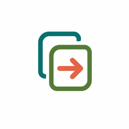
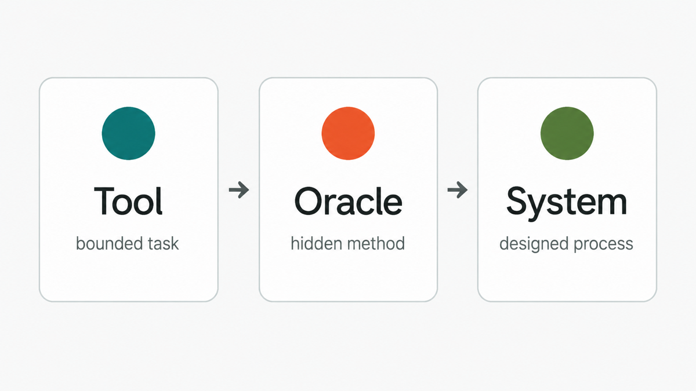
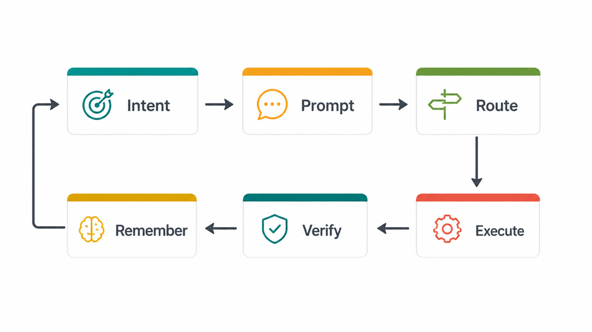
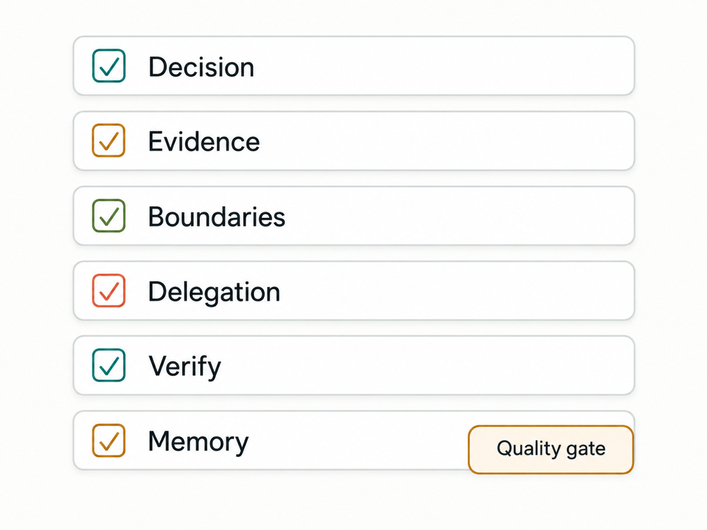

Tool mode
AI completes a bounded task: summarize a source, inspect a repo, restructure a file, draft a pass, chart data, write code, or run checks. I can review the result directly.

I use AI to move faster, but I keep ownership of the prompt, method, evidence, success criteria, and final judgment. The short version: dictate intent, build the prompt, route the work, verify the output, and remember only what is durable.
A finalized prompt, one that specifies what a successful output looks like and how the AI should validate its own response, is what I call a contract. Once it's running, I just call it the prompt.

AI completes a bounded task: summarize a source, inspect a repo, restructure a file, draft a pass, chart data, write code, or run checks. I can review the result directly.
This is the danger zone: the model gives a polished answer while silently choosing the method, evidence, exclusions, segments, and caveats.
The workflow is designed before execution: prompt, routing, source grounding, specialized checks, verification, and memory write-back. The system moves fast because the judgment layer is explicit.

I start with rough context: goals, constraints, edge cases, examples, worries, desired outputs, and success criteria.
Prompt Compass helps turn that raw intent into a clear prompt with objective, audience, context, constraints, steps, output format, success test, assumptions, tool rules, and stop conditions.
Codex handles implementation: coding, repo inspection, file shifting, cleanup, testing, and verification. Claude helps clarify what I actually want, refine messy thinking before Codex, create human-facing documents and spreadsheets, and handle visual QA or final polish. ChatGPT is mostly quick inquiry, search, and occasional deep-research packets. Gemini sits in a similar research lane and also shows up through third-party tools like Stitch.
I also use local AI co-pilots called MCPs: tools connected to my files, scripts, automations, and databases. This includes my second brain, Knowledge Atlas, and specialized compasses like Prompt Compass, Critical Compass, and UX Heuristics Compass.
My second brain is a central AI intelligence layer: a personalized local knowledge system with structured nodes and schemas. It gives AI continuity across projects and can store durable decisions, notes, and caveats. It is an MCP layer, not just a note-taking tool.
Each compass is a focused AI tool packed with scripts, automations, and domain-specific databases. They improve accuracy and quality while reducing token usage because the AI retrieves targeted context instead of carrying everything in one oversized prompt.
I still own the acceptance criteria. For code, that means tests, smoke checks, and diff review. For research, it means sources, uncertainty, caveats, and interpretation. Only durable learning gets written back.
Analyze these survey responses and tell me what users think.
Before writing findings, inspect the instrument, sample, missingness, unit of analysis, cleaning rules, scale direction, segmentation risks, uncertainty, and the decision the analysis supports. Show what would make the output trustworthy.
Prompt Compass turns the goal into a clear prompt. Codex can inspect files and produce reproducible analysis code. Research Compass can hold source notes. Critical Compass pressure-tests claims. My second brain stores the final decision and caveats.
It does not silently decide whether a noisy segment is meaningful, whether respondents generalize to the target population, or whether a correlation supports a product recommendation.
Start here: pick one task you're about to hand to AI and write down what a successful output looks like before you begin.

What decision, deliverable, or claim will this support?
What evidence is allowed, required, or explicitly out of scope?
Where should the AI stop and ask for a human decision?
What would make the output defensible if a stakeholder challenged it?